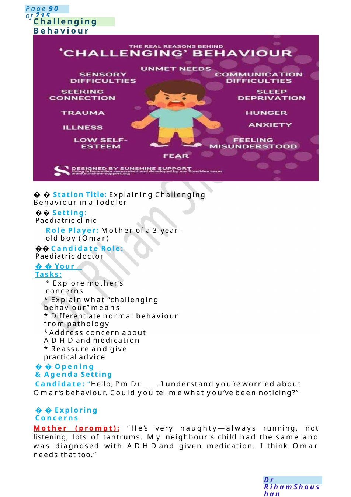
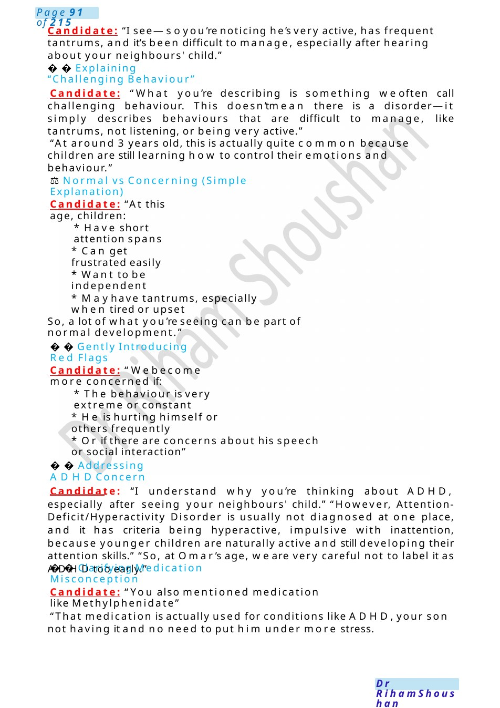
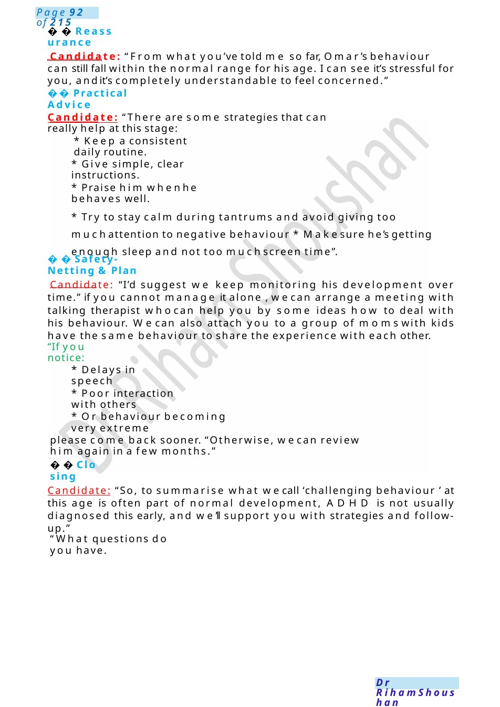
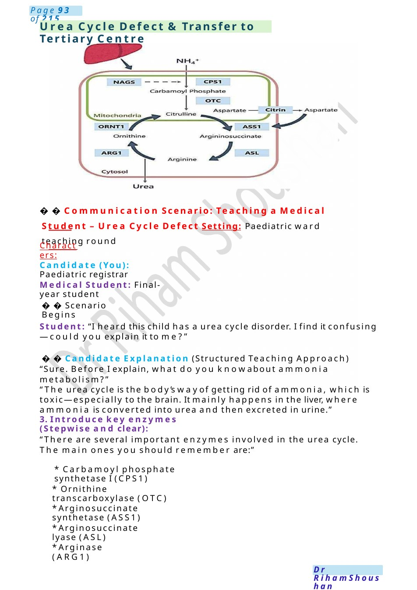

Challenging Behaviour
Station Title: Explaining Challenging Behaviour in a Toddler Setting: Paediatric clinic
Scenario Summary
Station Title: Explaining Challenging Behaviour in a Toddler Setting: Paediatric clinic
Full Original Scenario

Challenging Behaviour
Station Title: Explaining Challenging Behaviour in a Toddler
Setting: Paediatric clinic
Role Player: Mother of a 3-year-old boy (Omar)
⚕️ Candidate Role: Paediatric doctor
Your Tasks:
- Explore mother’s concerns
- Explain what “challenging behaviour” means
- Differentiate normal behaviour from pathology
- Address concern about ADHDand medication
- Reassure and give practical advice
Opening &Agenda Setting
Candidate: “Hello, I’m Dr ___. I understand you’re worried about Omar’s behaviour. Could you tell mewhat you’ve been noticing?”
Exploring Concerns
Mother (prompt): “He’s very naughty—always running, not listening, lots of tantrums. My neighbour's child had the same and was diagnosed with ADHDand given medication. I think Omar needs that too.”

Candidate: “I see—soyou’re noticing he’s very active, has frequent tantrums, and it’s been difficult to manage, especially after hearing about your neighbours' child.”
Explaining “Challenging Behaviour”
Candidate: “What you’re describing is something weoften call challenging behaviour. This doesn’tmean there is a disorder—it simply describes behaviours that are difficult to manage, like tantrums, not listening, or being very active.”
“At around 3 years old, this is actually quite common because children are still learning how to control their emotions and behaviour.”
⚖️Normal vs Concerning (Simple Explanation)
Candidate: “At this age, children:
- Have short attention spans
- Can get frustrated easily
- Want to be independent
- Mayhave tantrums, especially when tired or upset
So, a lot of what you’re seeing can be part of normal development.”
Gently Introducing Red Flags
Candidate: “Webecome more concerned if:
- The behaviour is very extreme or constant
- He is hurting himself or others frequently
- Or if there are concerns about his speech or social interaction”
Addressing ADHDConcern
Candidate: “I understand why you’re thinking about ADHD, especially after seeing your neighbours' child.” “However, Attention-Deficit/Hyperactivity Disorder is usually not diagnosed at one place, and it has criteria being hyperactive, impulsive with inattention, because younger children are naturally active and still developing their attention skills.” “So, at Omar’s age, we are very careful not to label it as ADHDtoo early.”
Clarifying Medication Misconception
Candidate: “You also mentioned medication like Methylphenidate”
“That medication is actually used for conditions like ADHD,your son not having it and no need to put him under more stress.

Reassurance
Candidate: “From what you’ve told me so far, Omar’s behaviour can still fall within the normal range for his age. I can see it’s stressful for you, andit’s completely understandable to feel concerned.”
- Practical Advice
Candidate: “There are some strategies that can really help at this stage:
- Keep a consistent daily routine.
- Give simple, clear instructions.
- Praise him whenhe behaves well.
- Try to stay calm during tantrums and avoid giving too muchattention to negative behaviour * Makesure he’s getting enough sleep and not too muchscreen time”.
Safety-Netting &Plan
Candidate: “I’d suggest we keep monitoring his development over time.” if you cannot manage it alone , wecan arrange a meeting with talking therapist whocan help you by some ideas how to deal with his behaviour. Wecan also attach you to a group of momswith kids have the same behaviour to share the experience with each other.
“If you notice:
- Delays in speech
- Poor interaction with others
- Or behaviour becoming very extreme
please come back sooner. “Otherwise, wecan review him again in a few months.”
Closing
Candidate: “So, to summarise what wecall ‘challenging behaviour ’ at this age is often part of normal development, ADHD is not usually diagnosed this early, and we’ll support you with strategies and follow-up.”
“What questions do you have.

Urea Cycle Defect &Transfer to Tertiary Centre
Communication Scenario: Teaching a Medical Student – Urea Cycle Defect Setting: Paediatric ward teaching round
Characters:
Candidate (You): Paediatric registrar
Medical Student: Final-year student
Scenario Begins
Student: “I heard this child has a urea cycle disorder. I find it confusing—could you explain it to me?”
Candidate Explanation (Structured Teaching Approach) “Sure. Before I explain, what do you knowabout ammonia metabolism?”
“The urea cycle is the body’s wayof getting rid of ammonia, which is toxic—especially to the brain. It mainly happens in the liver, where ammonia is converted into urea and then excreted in urine.”
3. Introduce key enzymes (Stepwise and clear):
“There are several important enzymes involved in the urea cycle. The main ones you should remember are:”
- Carbamoyl phosphate synthetase I (CPS1)
- Ornithine transcarboxylase (OTC)
- Arginosuccinate synthetase (ASS1)
- Arginosuccinate lyase (ASL)
- Arginase (ARG1)